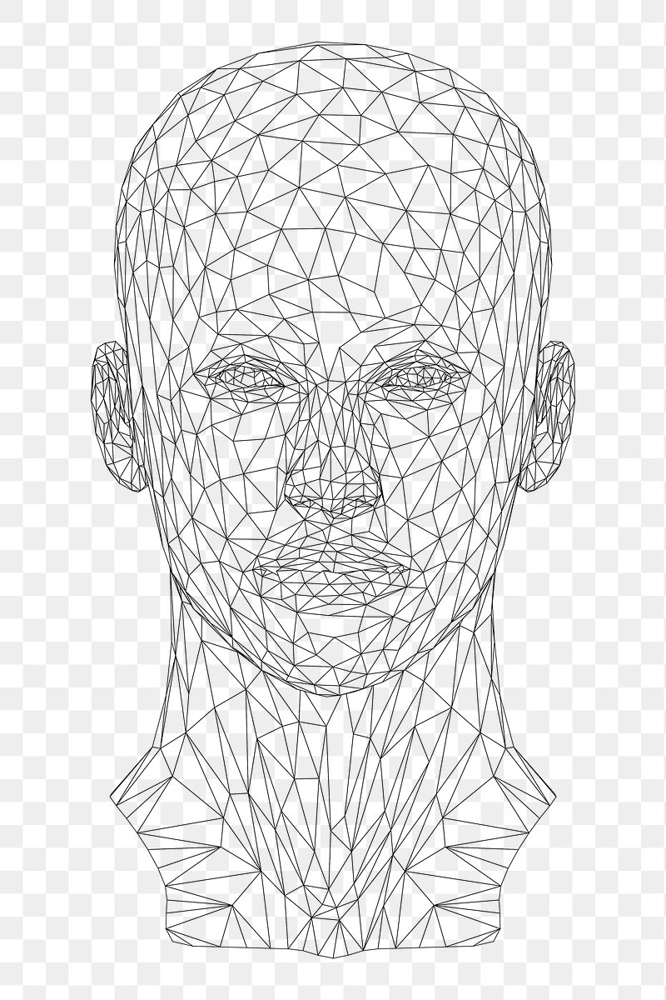

Site Name
South Africa Explorer
The name South Africa Explorer was selected because the website will help visitors explore South Africa's places, culture, attractions, food, and travel experiences.
Proposed domain: southafricaexplorer.org
Site Purpose
South Africa Explorer will provide useful information about destinations, attractions, culture, food, and travel experiences across South Africa. The website will help visitors discover places to visit and learn more about the country.
Scenarios
Scenario 1
What are some interesting places to visit in South Africa?
Scenario 2
What traditional foods and cultural experiences can I find when visiting South Africa?
Scenario 3
Where can I find information about popular South African destinations and attractions?
Color Scheme
Deep Green
#1B5E20
Used for headings, navigation, and important accents.
Gold
#D4A017
Used for accents, borders, buttons, and highlights.
Cream
#FFF8E7
Used as the main background color to keep the page comfortable and easy to read.
Typography
Poppins
Poppins will be used for headings and navigation because it is clean and easy to read.
Roboto
Roboto will be used for paragraphs and general body text.
Wireframes
These black-and-white wireframes show the planned home page layout for small and large screens.
Small Viewport
Large Viewport
